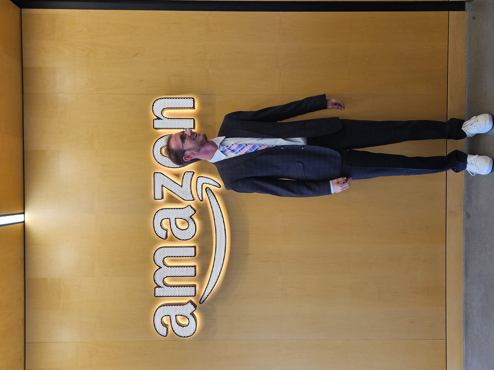

I have completed software engineering internships at Amazon and Trane Technologies, contributed to a Department of Defense engineering project at UF, and will be joining Amazon full-time as a Software Development Engineer I in Sunnyvale, CA after graduation.

Eliminated 1,500 hours of manual analysis by building a machine learning pipeline that automated internal business calculations from operational datasets. Led development of a production AWS application using Coral CDK, integrating SageMaker AI. Contributed in a large, fast-paced team through daily standups, code reviews, and technical discussions, and conducted a training workshop to onboard business partners to the application.

Improved data processing efficiency by 97% via a new data filtering and visualization tool using Python that automated 10+ hours of manual work weekly. Reduced load times by developing a new database organization in C# for Trane Select Assist, and expedited retrieval for a natural language processing database by implementing vector embeddings. Conducted focus groups to gather user feedback on Trane Technologies' AI tool, and secured 1st place in the student competition by presenting a sensor-based monitoring solution to executives.

Contributed to the Base Integrated Mesh Management System (BIMMS) project for the USAF 96th Test Wing through the I4D course, a collaboration between UF and the U.S. Department of Defense. Worked on projects involving secure TCP networking, backend development, and system integration, deepening skills in systems programming and applied computer science.

Served as an undergraduate TA for a 100+ student machine learning engineering course. Led lectures, held office hours, and developed instructional materials covering core ML concepts, model development, and engineering best practices.

Designed and delivered a 5-part K-12 computer science and AI curriculum through UF's Active Learning Program in partnership with InSciStemify. Taught core concepts in programming, AI fundamentals, and computational thinking to students with no prior CS background.
Projects
Developed an end-to-end reinforcement learning pipeline for autonomous satellite sensor tasking, integrating orbital simulation, environment modeling, and policy training within a scalable testing framework. Evaluated autonomous tasking policies against heuristic and greedy baselines, reducing missed targets by 10%. Engineered a scalable experimental testbed for satellite autonomy research, enabling rapid experimentation with RL reward shaping, mission constraints, and orbital configurations.
Achieved 75.6% test accuracy by developing a Convolutional Neural Network in TensorFlow and Keras, 10% higher accuracy than the average Kaggle submission. Increased training sample size by 6x through data augmentation, improving classification on the FER-2013 dataset. Tuned Naive-Bayes and Logistic Regression baseline models to 35% peak test accuracy.